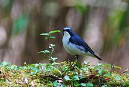
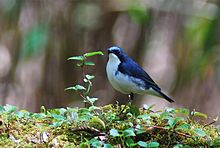

| Siberian Blue Robin | |
|---|---|
|  | |
| Male | |
| Conservation status | |
| Binomial name | |
| Luscinia cyane (Pallas, 1776) |
|
| Synonyms | |
|
Luscinia cyanea (lapsus) |
| Siberian Blue Robin | |
|---|---|
|  | |
| Male | |
| Conservation status | |
| Binomial name | |
| Luscinia cyane (Pallas, 1776) |
|
| Synonyms | |
|
Luscinia cyanea (lapsus) |
The Siberian Blue Robin, Luscinia cyane, is a small passerine bird that was formerly classed as a member of the thrush family Turdidae, but is now more generally considered to be an Old World flycatcher, family Muscicapidae. It, and similar small European species, are often called chats. Recent research suggests that this species is one of some East Asian Luscinias which should be classified in a new genus together with the Japanese and Ryūkyū Robins.[2]
It is a migratory insectivorous species breeding in eastern Asia across to Japan. It winters in southeast Asia and Indonesia.
The breeding habitat is coniferous forest with dense undergrowth, often beside rivers or at woodland edges. It feeds on the ground but is very skulking. In winter, this bird also tends to stay in dense vegetation.
This species is larger than the European Robin. The breeding male is unmistakable with blue upperparts and white underparts. The female is much drabber, with brown upperparts and whitish underparts. Her dark eye stands out against the paler brown face.
This species is a very rare vagrant to Europe, and has vagrant status even as far east as India.

{kind=link}